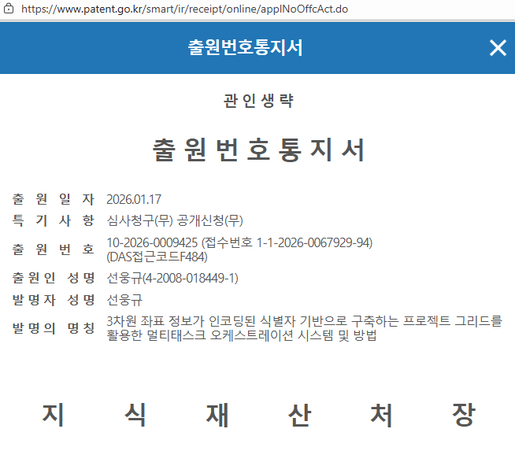

task_a >> task_b를 Python 코드로 직접 작성. Task 100개면 의존성 코드도 100줄 이상. Task 추가 시 기존 의존성도 수동 수정 필요.기존 도구들은 세 가지 한계를 "더 편하게" 만드는 방향으로 개선해왔다.
SAL Grid는 이 전제 자체를 뒤집는다.
SAL ID 하나를 부여하면, 프로젝트 관리에 필요한 모든 구조가 자동으로 만들어진다.
SAL ID 부여 → 파싱 → 22개 속성 그리드 자동 생성
→ Task 지시서 + 검증 지시서 쌍으로 생성
→ 에이전트 · 도구 자동 배정
→ 의존성 · 병렬성 · 실행 순서 자동 결정
→ 9단계 오케스트레이션 사이클 자동 구동S{Stage}{Area}{Level}{Variant?}
S — 접두사 (고정)
Stage — 1~2자리 정수. 프로젝트 진행 단계
Area — 2자리 영문 대문자. 기능적 영역 코드
Level — 1~2자리 정수. 의존성 계층
Variant — 소문자 a~z (선택). 병렬 분기S2BA3 = Stage 2, Backend API, Level 3
S1FE1a = Stage 1, Frontend, Level 1, 첫 번째 병렬 분기
S1 → S2 → S3S2BA1 → S2BA2 → S2BA3S2BA1a와 S2BA1b 동시 수행S2BA1, S2BA2, S2BA3 = 같은 기능군정규식: ^S(\d{1,2})([A-Z]{2})(\d{1,2})([a-z])?$
파싱 예시: S 2 BA 3 a
│ │ │ │ └─ 그룹4: Variant = a (병렬 분기)
│ │ │ └─── 그룹3: Level = 3 (의존성 계층)
│ │ └────── 그룹2: Area = BA (Backend API)
│ └───────── 그룹1: Stage = 2 (진행 단계)
└─────────── 접두사 S (고정)모든 작업은 Stage(X축) × Area(Y축) 2차원 매트릭스 위에 배치되며, 각 셀 안에서 Level이 깊이를 부여하여 3차원 구조를 형성한다.
SAL ID 하나를 파싱하면 22개 속성의 프로젝트 관리 그리드가 자동 완성된다.
SAL ID를 기반으로 Task 지시서와 검증 지시서가 쌍으로 동시 생성된다.
Task 완료와 동시에 검증이 자동 트리거되며, 작성자 ≠ 검증자 분리 배정이 시스템 레벨에서 강제된다.
Pending → In Progress → Executed → (Verified 후) Completed. 단계 건너뛰기 불가.
최초 ID: S4BI1
1차 변경 후: S4BI1_S1BI2 ← 기존 ID 뒤에 새 ID 연결
2차 변경 후: S4BI1_S1BI2_S1BI3 ← 체인이 계속 연장
─────────── ──────
변경 이력 최신 ID개별 Task 검증에 더하여, Stage 단위 최종 승인 절차가 존재한다. 비유하면 "층별 준공 검사"와 같다.
계획(①~③) → 실행(④~⑥) → 검증·승인(⑦~⑨)의 3단계 그룹으로 구성.
프로젝트 관리 체계를 설계하는 단계. 매트릭스 위에 작업을 배치하고, ID를 부여하면 나머지는 자동 완성.
실제 작업이 수행되고 품질이 확보되는 핵심 실행 단계.
개별 Task 검증을 넘어 Stage 전체 단위의 종합 품질 관문.
| 비교 항목 | Airflow | Jira / Asana | 간트 차트 | SAL Grid |
|---|---|---|---|---|
| 의존성 정의 | Python 수동 | 수동 링크 | 수동 연결 | ID 파싱 자동 |
| 식별자 구조 | 단순 문자열 | 순차 번호 | 없음 | 3차원 좌표 |
| 변경 이력 | Git 이력 | 텍스트 로그 | 미지원 | Append-Only |
| 참조 무결성 | 해당 없음 | 링크 깨짐 | 해당 없음 | 자가 치유 |
| 실행-검증 | 별도 도구 | 별도 도구 | 미지원 | 일체화 |
| Stage Gate | 없음 | 없음 | 없음 | 시스템 강제 |
| 비개발자 | 불가 | 제한적 | 가능 | 완전 가능 |
기존 기술의 개선 방향과 SAL Grid의 접근 방식은 근본적으로 다른 차원에 있다.
SAL Grid의 3차원 좌표계는 도메인 비종속적 구조이다. Stage와 Area의 정의만 해당 산업에 맞게 바꾸면 동일한 시스템을 적용할 수 있다.
아래는 SAL Grid를 실제 적용한 SSAL Works 프로젝트의 Stage × Area 매트릭스(일부 발췌)이다. 5 Stage × 11 Area에 총 74개 Task가 배치되어 있다.
| Area | S1 개발준비 | S2 개발1차 | S3 개발2차 | S4 개발3차 | S5 마무리 |
|---|---|---|---|---|---|
| F (Frontend) | 2 Task | 3 Task | 2 Task | 8 Task | 3 Task |
| BA (Backend API) | — | 5 Task | 3 Task | 6 Task | 3 Task |
| BI (Backend Infra) | 2 Task | 3 Task | 2 Task | 1 Task | — |
| S (Security) | 1 Task | 1 Task | 1 Task | 2 Task | 2 Task |
| D (Database) | 1 Task | 1 Task | 1 Task | 2 Task | 1 Task |
| T (Testing) | 1 Task | 1 Task | 1 Task | 2 Task | 1 Task |
| + M, U, O, E, C Area (생략) = 총 74개 Task | |||||

감사합니다